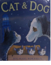

A heart-warming tale about an unusual friendship from Kate Greenaway award-winner, Michael Foreman.When Cat is accidentally whisked away in a fish van, her kittens find themselves all alone. Left to fend for themselves they don't know how to survive, until an unlikely new friend comes along... an old dog who looks after them until mum returns.